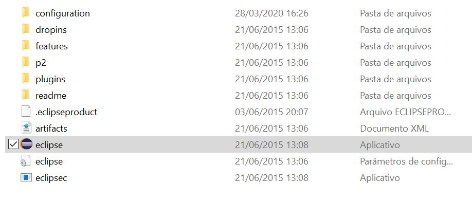
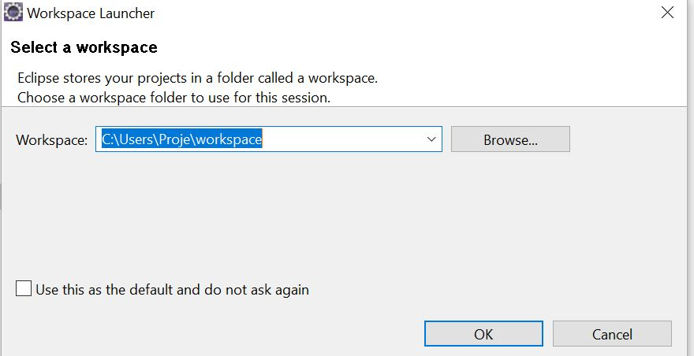

Criação de um Web Service
Passo 1:
Baixar o Eclipse, Apache Axis e o Apache TOMCAT
Para baixar o eclipse se redirecione a seguinte página:
Página Eclipse IDE Java EE for DevelopersPara baixar o Apache se redirecione a seguinte página:
Página Apache TOMCAT 7Para baixar o Apache se redirecione a seguinte página:
Página Apache AxisPasso 2:
Descompactar a pasta.
Para descompactar a pasta do eclipse e do apache tomcat e apache axis você pode usar o winzip do proprio windows ou então baixar o Winrar no link a seguir:
Página WinrarPasso 3:
Abrir o Eclipse.
Para abrir o eclipse basta ir na pasta que você descompactou o eclipse e clicar no aplicativo eclipse e selecionar o diretorio onde seu projeto será salvo como nas imagens a seguir
 Passo 4:
Configurar e instalar Apache TOMCAT.
Basta seguir o seguinte processo demonstrado nas imagens a seguir.
1. abrir Preferences

2. adicionar server

3. selecionar apache 7

4. incluir caminho da pasta que foi descompactada do apache

5. verificar se carregou o apache na lista e concluir

Passo 5:
Incluir o plugin do Axis no eclipse
para adicionar o axix ao eclipse basta seguir os processos demonstrados nas seguintes imagens
1. abrir Preferences
2. Configurar axis2 preferences
O caminho na imagem é o caminho onde foi feita a extração do axis baixado no passo 1.

Passo 6:
Criando um novo projeto
para criar um novo projeto basta seguir os processos demonstrados nas seguintes imagens
1. Criar Novo

2. Selecionar Dynamic Web Project

3. Preencher Nome do projeto e localização do mesmo

4. Selecionar a pasta src como patch de construção

5. Criar uma classe dentro do patch

6. Dar um nome ao pacote que ela irá pertencer e o nome da classe

7. Incluir a função que irá ser realizada

8. Selecionar a classe e criar um web service apartir dela

9. Passar os parametros a seguir para o web service

10. Verificar informações e seguir

11. Iniciar o server

12. Confirmar o test facillity

13. Gerar o proxy

14. Finalizar

15. Testar via pagina web

16. Abrir TCP/IP Monitor

17. Verificar xml de requisição e resposta